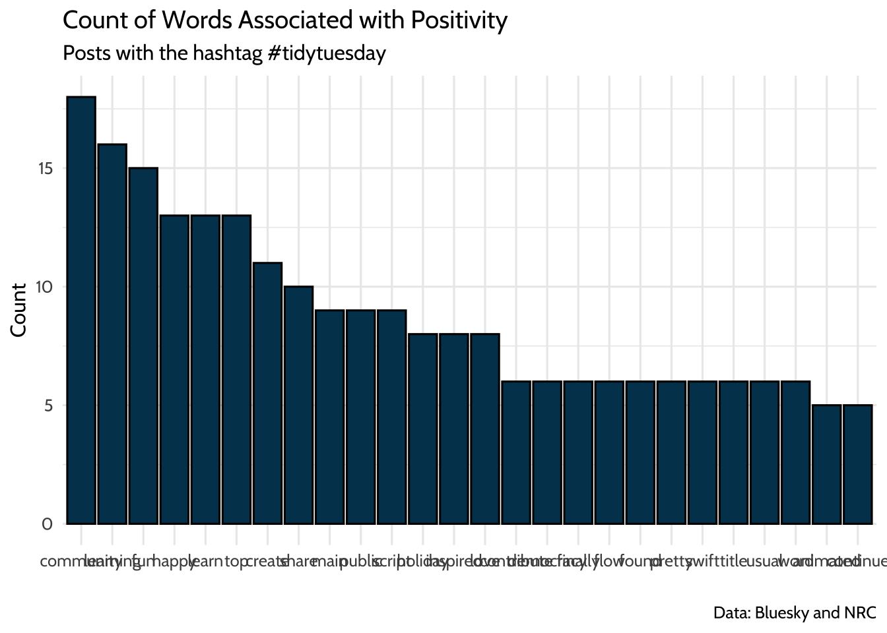

11 Walkthrough 5: Text analysis with social media data
Abstract
This chapter explores tidying, transforming, visualizing, and analyzing text data. Data scientists in education are surrounded by text-based data sources like word processing documents, emails, and survey responses. Data scientists in education can expand their opportunities to learn about the student experience by adding text mining and natural language processing to their toolkit. Using Bluesky data, this chapter shows the reader practical tools for text analysis, including preparing text data, counting and visualizing words, and doing sentiment analysis. The chapter uses posts from #tidytuesday, a weekly data visualization challenge, to put these techniques in an education context. Data science tools in this chapter include transforming text into data frames, filtering datasets for keywords, running sentiment analysis and algorithms, and visualizing data.
11.2 Functions introduced
sample_n()set.seed()tidytext::unnest_tokens()tidytext::get_sentiments()dplyr::inner_join()dplyr::anti_join()
11.4 Chapter overview
The ability to work with many kinds of datasets is one of the great features of doing data science with programming. So far you’ve analyzed data in .csv files, but that’s not the only way data is stored. Learning basic techniques for analyzing text gives you another way to understand the student experience.
In this chapter, you’ll focus on analyzing textual data from Bluesky. We focus on this particular data source because it’s relevant to a number of educational topics and questions. In addition, Bluesky data includes information about who posted, when they posted, the post’s text, and a great deal more (see (Kenny, 2024)). This makes it especially well-suited for a group of text analysis techniques called natural language processing (often abbreviated NLP) (Hirschberg & Manning, 2015).
Note that we use #tidytuesday in this chapter and the next because it exemplifies learning-related data you might find in research. It’s also straightforward to access from Bluesky. While this chapter dives deeply into the analysis of the text of posts, Chapter 12 explores the nature of the interactions between individuals using the #tidytuesday hashtag.
11.4.1 Background
When thinking about data science in education, one tends to think about data stored in spreadsheets. But what can you learn about the student experience from text data? Take a moment to mentally review how much of your work day you spend either creating or consuming text data. In education, you’re surrounded by it. Lessons are created in word processor documents, students submit assignments online, and the school community posts on public social media platforms. Text can be an authentic reflection of reality in schools, so how might we learn from it?
Even the most basic text analysis techniques will expand your data science toolkit. For example, you can use text analysis to count the number of key words that appear in open-ended survey responses. Or you can analyze word patterns in student responses or message board posts.
Analyzing a collection of text is different from analyzing large numerical datasets because words don’t have agreed-upon values. The number 2 will always be more than 1 and less than 3. The word “fantastic”, on the other hand, has multiple meanings depending on interpretation and context.
Using text analysis can help to broadly estimate meaning in the text. When paired with observations, interviews, and close review of the text, this approach can help educators learn from text data. In this chapter, you’ll learn how to count the frequency of words in a dataset and associate those words with common feelings like positivity or joy.
You’ll learn these techniques using a dataset of posts from Bluesky. We encourage you to complete the walkthrough, then reflect on how what you’ve learned applies to other texts, like word processing documents or websites.
11.4.2 Data source
Social media platforms provide rich sources of text data that help you learn about communities. Since there’s so much available, it’s useful to narrow the posts so you can focus on your analytic questions. Hashtags are one way to do that. Here’s an example:
I’m trying to recreate some Stata code in R, anyone have a good resource for what certain functions in Stata are doing? #RStats #Stata
Bluesky recognizes any words that start with a “#” as a hashtag. The hashtags “#RStats” and “#Stata” make this post conveniently searchable. If you search for “#RStats”, Bluesky returns all the posts containing that hashtag.
In this example, we’ll be analyzing a dataset of posts that have the hashtag #tidytuesday. #tidytuesday is a community sparked by the work of one of the Data Science in Education Using R co-authors, Jesse Mostipak, who created the #r4ds community from which #tidytuesday was created. #tidytuesday is a weekly data visualization challenge. A great place to see examples from past #tidytuesday challenges is an interactive Shiny application (https://github.com/nsgrantham/tidytuesdayrocks).
The #tidytuesday hashtag returns posts about the weekly TidyTuesday practice, where folks learning R create and share data visualizations they made using tidyverse R packages.
11.4.3 Methods
In this walkthrough, you’ll be using simple methods – counting words in a text dataset. Then you’ll also use a more advanced technique called sentiment analysis to count and visualize words that have a positive association. Lastly, you’ll learn how to get more context by selecting random rows of posts for closer reading or qualitative analysis.
11.5 Load packages
For this analysis, you’ll use the {tidyverse} and {here} packages. You’ll also use the {tidytext} package for working with textual data (Robinson & Silge, 2025). If you haven’t yet, you may need to install the {tidytext} package.
For instructions on installing packages, see the “Packages” section of the “Foundational Skills” chapter.
Start by loading these packages:
11.6 Import data
Next, load the data into your environment so you can start analyzing it. In Chapter 12, you’ll learn how to access this data through Bluesky’s Application Programming Interface, or API.
You’ll use the prepared dataset of #tidytuesday posts from Bluesky. Start by reading in this dataset:
11.7 View data
Return to your raw_posts dataset. Run glimpse(raw_posts) and notice the variables in this dataset. It’s good practice to use functions like glimpse() or str() to look at the data type of each variable. For this walkthrough, you’ll need to extract the text from the nested data structure and create an identifier for each post.
11.8 Process data
In this section you’ll extract the text and transform the dataset so each row represents a word. After that, the dataset will be ready for exploring.
First, extract the text from the nested record structure. Each post’s text is stored in record$text.
posts <-
raw_posts %>%
mutate(post_id = row_number(),
text = map_chr(record, ~pluck(.x, "text", .default = ""))) %>%
filter(text != "") %>%
select(post_id, text) %>%
mutate(post_id = as.character(post_id))Now the dataset has a column to identify each post and a column that shows the text that users posted. But each row has the entire post in the text variable, which makes it hard to analyze. If the dataset stays like this, you’d need to use functions on each row to count words. You can count words more efficiently if each row represents a single word. Splitting each sentence into individual words, one per row, is called “tokenizing”. In their book Text Mining With R, Silge & Robinson (2017) describe tokens this way:
A token is a meaningful unit of text, such as a word, that we are interested in using for analysis, and tokenization is the process of splitting text into tokens. This one-token-per-row structure is in contrast to the ways text is often stored in current analyses, perhaps as strings or in a document-term matrix.
Use unnest_tokens() from the {tidytext} package to transform the dataset of posts into a dataset of words.
## # A tibble: 17,164 × 2
## post_id word
## <chr> <chr>
## 1 1 all
## 2 1 credit
## 3 1 to
## 4 1 cvidonne.bsky.social
## 5 1 for
## 6 1 the
## 7 1 idea
## 8 1 behind
## 9 1 this
## 10 1 plot
## # ℹ 17,154 more rowsYou use output = word to tell unnest_tokens() that you want the column of tokens to be called word. We use input = text to tell unnest_tokens() to tokenize the posts in the text column of the posts dataset. The result is a new dataset where each row has a single word in the word column and a unique ID in the post_id column that tells us which post the word appears in.
Notice that the tokens dataset has more rows than the posts dataset. This says a lot about how unnest_tokens() works. In the posts dataset, each row has an entire post and its unique ID. Since that unique ID is assigned to the entire post, each unique ID only appears once in the dataset. When you used unnest_tokens() to put each word on its own row, you broke each post into many words. This created additional rows in the dataset. And since each word in a single post shares the same ID for that post, an ID now appears multiple times in the new dataset.
You’re almost ready to start analyzing the dataset. There’s one more step—removing common words that will make your analysis difficult. Words like “the” or “a” are in a category of words called “stop words”. Stop words serve a function in verbal communication, but don’t tell you much on their own. As a result, they clutter a dataset of useful words and make it harder to manage the volume of words during analysis. The {tidytext} package includes a dataset called stop_words that you’ll use to remove rows containing stop words. You’ll use anti_join() on the tokens dataset and the stop_words dataset to keep only rows that have words not appearing in the stop_words dataset. You’ll also remove account names.
data(stop_words)
tokens <-
tokens %>%
anti_join(stop_words, by = "word") %>%
filter(!str_detect(word, "\\.bsky\\.social$")) # removes account names from the words (tokens)Why does this work? Let’s look closer. inner_join() matches the observations in one dataset to another by a specified common variable. Any rows that don’t have a match get dropped from the resulting dataset. anti_join() does the same thing as inner_join() except it drops matching rows and keeps the rows that don’t match. This is convenient for the analysis because it removes rows from tokens that contain words in the stop_words dataset. When you call anti_join(), you’re left with rows that don’t match words in the stop_words dataset. These remaining words are the ones you’ll be analyzing.
One final note before you start counting words: Remember when you first tokenized the dataset and passed unnest_tokens() the argument output = word? You conveniently chose word as the column name because it matches the column name word in the stop_words dataset. This makes the call to anti_join() simpler because anti_join() knows to look for the column named word in each dataset.
11.9 Analysis: counting words
Now it’s time to start exploring the newly cleaned dataset of posts. A good start is computing the frequency of each word and seeing which ones show up the most. You can pipe tokens to the count() function to do this:
## # A tibble: 2,949 × 2
## word n
## <chr> <int>
## 1 tidytuesday 622
## 2 rstats 428
## 3 dataviz 345
## 4 github.com 270
## 5 data 250
## 6 code 231
## 7 week 153
## 8 ggplot2 152
## 9 r4ds 133
## 10 week's 130
## # ℹ 2,939 more rowsYou pass count() the argument sort = TRUE to sort the n variable from the highest value to the lowest value. This makes it easy to see the most frequently occurring words at the top. Not surprisingly, “tidytuesday” was the most frequent word in this dataset. For future analyses, you may wish to remove it given that it was the basis of the search.
You may want to explore further by showing the frequency of words as a percent of the whole dataset. Calculating percentages like this is useful in education scenarios because it helps you make comparisons across different sized groups. For example, you can calculate the percentage of students in each classroom that receive special education services.
In the posts dataset, you’ll calculate the count of words as a percentage of all posts. Do that by using mutate() to add a column called percent. percent will divide n by sum(n), which is the total number of words. Finally, multiply the result by 100:
tokens %>%
count(word, sort = TRUE) %>%
# n as a percent of total words
mutate(percent = n / sum(n) * 100)## # A tibble: 2,949 × 3
## word n percent
## <chr> <int> <dbl>
## 1 tidytuesday 622 6.17
## 2 rstats 428 4.24
## 3 dataviz 345 3.42
## 4 github.com 270 2.68
## 5 data 250 2.48
## 6 code 231 2.29
## 7 week 153 1.52
## 8 ggplot2 152 1.51
## 9 r4ds 133 1.32
## 10 week's 130 1.29
## # ℹ 2,939 more rowsEven at 622 appearances in our dataset, “tidytuesday” represents only about 6% of the total words. This makes sense when you consider our dataset contains 2,963 unique words.
11.10 Analysis: sentiment analysis
Now that you have a sense of the most frequently appearing words, it’s time to explore sentiment using the posts dataset. Imagine you’re an education consultant aiming to learn about the TidyTuesday data visualization ritual and its community. You know from the first part of the analysis that the token “dataviz” (short for data visualization) appeared frequently relative to other words. A good start would be to see how the appearance of that token in a post is associated with other positive words.
You’ll need to use a technique called “sentiment analysis” to get at the positivity of words in these posts. Sentiment analysis evaluates words for their emotional association. If you analyze words by the emotions they convey, you can start to explore patterns in large text datasets like the tokens data.
Earlier you used anti_join() to remove stop words in the dataset. You’re going to do something similar here to reduce the tokens dataset to words that have a positive association. You’ll use a dataset called the “NRC Word-Emotion Association Lexicon” to identify words with a positive association. This dataset was published in a work called Crowdsourcing a Word-Emotion Association Lexicon (Mohammad & Turney, 2013).
You need to install a package called {textdata} to access the NRC Word-Emotion Association Lexicon dataset. Note that you only need to have the package installed. You do not need to load it with the library(textdata) command.
If you don’t already have it, install {textdata}:
To explore this dataset more, use a {tidytext} function called get_sentiments() to view words and their associated sentiment. If this is your first time using the NRC Word-Emotion Association Lexicon, you’ll be prompted to download the NRC lexicon. Respond “yes” to the prompt and the NRC lexicon will download. Note that you’ll only have to do this the first time you use the NRC lexicon.
This returns a dataset with two columns. The first is word and contains a list of words. The second is the sentiment column, which contains an emotion associated with each word. This dataset is similar to the stop_words dataset. Note that this dataset also uses the column name word, which will again make it easy for us to match this dataset to the tokens dataset.
11.10.1 Count positive words
Begin working on reducing the tokens dataset down to only words that the NRC dataset associates with positivity. You’ll start by creating a new dataset, nrc_pos, which contains the NRC words that have the positive sentiment. Then you’ll match that new dataset to tokens using the word column that is common to both datasets. Finally, you’ll use count() to total up the appearances of each positive word.
# Only positive in the NRC dataset
nrc_pos <-
nrc_sentiments %>%
filter(sentiment == "positive")
# Match to tokens
pos_tokens_count <-
tokens %>%
inner_join(nrc_pos, by = "word") %>%
# Total appearance of positive words
count(word, sort = TRUE)
pos_tokens_count## # A tibble: 214 × 2
## word n
## <chr> <int>
## 1 community 18
## 2 learning 16
## 3 fun 15
## 4 happy 13
## 5 learn 13
## 6 top 13
## 7 create 11
## 8 share 10
## 9 main 9
## 10 public 9
## # ℹ 204 more rowsYou can visualize these words nicely by using {ggplot2} to show the positive words in a bar chart. There are 213 positive words total, which is hard to convey in a compact chart. Solve that problem by filtering the dataset to words that only appear 5 times or more.
pos_tokens_count %>%
filter(n >= 5) %>%
ggplot(., aes(x = reorder(word, -n), y = n)) +
geom_bar(stat = "identity",
fill = dataedu_colors("darkblue"),
color = "black") +
labs(
title = "Count of Words Associated with Positivity",
subtitle = "Posts with the hashtag #tidytuesday",
caption = "Data: Bluesky and NRC",
x = "",
y = "Count"
) +
theme_dataedu()
Figure 11.1: Count of Words Associated with Positivity
Note the use of reorder() when mapping the word variable to the x aesthetic. Using reorder() sorts the x-axis in descending order by the variable n. Sorting the bars from highest frequency to lowest makes it easier to identify and compare the most and least common words in the visualization.
11.10.2 “Dataviz” and other positive words
Earlier in the analysis we learned that “dataviz” was among the most frequently occurring words in this dataset. We can continue our exploration of TidyTuesday posts by seeing how many posts with “dataviz” also had at least one positive word from the NRC dataset. Looking at this can give us clues about how people in the TidyTuesday learning community view dataviz as a tool.
There are a few steps to this part of the analysis, so let’s review a strategy. You’ll need to use the post_id field in the posts dataset to filter the posts that contain the word dataviz. Then you’ll use the post_id field in these dataviz posts to identify the ones that include at least one positive word.
How do you know which post_id values contain the word “dataviz” and which ones contain a positive word? Recall that the tokens dataset only has one word per row, which makes it easy to use functions like filter() and inner_join() to make two new datasets: one of post_id values that have “dataviz” in the word column and one of post_id values that have a positive word in the word column.
You’ll explore the combinations of “dataviz” and any positive words in the posts dataset using these three ingredients: the posts dataset, a vector of post_ids for posts that have “dataviz” in them, and a vector of post_ids for posts that have positive words in them. Now that you have the strategy, it’s time to write the code and see how it works.
First, you’ll make a vector of post_ids for posts that have “dataviz” in them. You’ll use this later to identify posts that contain “dataviz” in the text. Use filter() on the tokens dataset to keep only the rows that have “dataviz” in the word column. Name that new dataset dv_tokens.
## # A tibble: 345 × 2
## post_id word
## <chr> <chr>
## 1 1 dataviz
## 2 2 dataviz
## 3 4 dataviz
## 4 5 dataviz
## 5 6 dataviz
## 6 7 dataviz
## 7 14 dataviz
## 8 15 dataviz
## 9 16 dataviz
## 10 17 dataviz
## # ℹ 335 more rowsThe result is a dataset that has post_id in one column and the word “dataviz” in the other column. Use $ to extract a vector of post_id for posts that have “dataviz” in the text. This vector has hundreds of values, so you can use head to view just the first ten.
## [1] "1" "2" "4" "5" "6" "7"Now you’ll do this again, but this time, you’ll make a vector of post_id for posts that have positive words in them. This will be used later to identify posts that contain a positive word in the text. We’ll use filter() on the tokens dataset to keep only the rows that have any of the positive words in the word column. If you’ve been running all the code up to this point in the walkthrough, you’ll notice that you already have a dataset of positive words called nrc_pos, which can be turned into a vector of positive words by typing nrc_pos$word. Use the %in% operator in the call to filter() to find only words that are in this vector of positive words. Name this new dataset pos_tokens.
## # A tibble: 517 × 2
## post_id word
## <chr> <chr>
## 1 1 credit
## 2 2 public
## 3 4 experienced
## 4 4 nerve
## 5 5 script
## 6 7 vote
## 7 7 count
## 8 10 perfect
## 9 12 usual
## 10 12 content
## # ℹ 507 more rowsThe result is a dataset that has post_id in one column and a positive word from tokens in the other column. You’ll again use $ to extract a vector of post_id for these posts.
## [1] "1" "2" "4" "4" "5" "7"That’s a lot of post_ids, many of which are duplicates. You can make the vector of post_ids a little shorter. Use distinct() to get a data frame of post_id, where each post_id only appears once:
Note that distinct() drops all variables except for post_id. For good measure, use distinct() on the dv_tokens data frame too:
Now you have a data frame of post_id for posts containing “dataviz” and another for posts containing a positive word. Use these to transform the posts dataset. First filter posts for rows that have the “dataviz” post_id. Then create a new column called positive that will tell you if the post_id is from the vector of post_ids for positive words. Name this filtered dataset dv_pos.
dv_pos <-
posts %>%
# Only posts that have the dataviz post_id
filter(post_id %in% dv_tokens$post_id) %>%
# Is the post_id from our vector of positive words?
mutate(positive = if_else(post_id %in% pos_tokens$post_id, 1, 0))Take a moment to dissect how you use if_else() to create a positive column. You gave if_else() three arguments:
post_id %in% pos_tokens$post_id: a logical statement1: the value ofpositiveif the logical statement is true0: the value ofpositiveif the logical statement is false
The new positive column will take the value 1 if the post_id was in the pos_tokens dataset and the value 0 if the post_id was not in the pos_tokens dataset. Practically speaking, positive is 1 if the post has a positive word and 0 if it does not have a positive word.
And finally, look at what percent of posts that had “dataviz” in them also had at least one positive word:
## # A tibble: 2 × 3
## positive n perc
## <dbl> <int> <dbl>
## 1 0 202 0.587
## 2 1 142 0.413About 41% of posts that have “dataviz” in them also have at least one positive word, and about 59% of them did not have at least one positive word. It’s worth noting that this doesn’t necessarily mean users had nothing positive to say in the other 59% of “dataviz” posts. You can’t know why some posts had positive words and some didn’t, but you can know that more dataviz posts had positive words than not. To put this in perspective, you might have a different impression if 5% or 95% of the posts had positive words.
Since the point of exploratory data analysis is to explore and develop questions, let’s continue to do that. In this last section we’ll review a random selection of posts for context.
11.10.3 Taking a close read of randomly selected posts
This dataset is large, so you started by zooming out to summarize the data. But it’s also useful to zoom in and read some of the posts. This will help you build intuition and context about how users talk about TidyTuesday in general. Even though this doesn’t lead to quantitative findings, it helps you learn more about the underlying post content.
Start by making a dataset of posts that has positive words from the NRC dataset. Earlier in this walkthrough, you made a dataset of posts that had “dataviz” and a column for positive words. Reuse that technique, but on the dataset of all posts instead of only the “dataviz” ones.
pos_posts <-
posts %>%
mutate(positive = if_else(post_id %in% pos_tokens$post_id, 1, 0)) %>%
filter(positive == 1)Again, you’re using if_else to make a new column called positive that takes its value based on whether post_id %in% pos_tokens$post_id is true or not.
You can use slice() to help you pick the rows. When you pass slice() a row number, it returns that row from the dataset. For example, you can select the 1st and 3rd row of our posts dataset this way:
## # A tibble: 2 × 2
## post_id text
## <chr> <chr>
## 1 1 "All credit to @cvidonne.bsky.social for the idea behind this plot. I…
## 2 3 "Posit Conf 2024 Shiny app (based on the #tidytuesday data and some s…Randomly selecting rows from a dataset is a great technique to have in your toolkit. Random selection helps you avoid biases when picking rows to review.
Here’s one way to do that using base R:
## [1] 10 1 6 2 8Passing sample() a vector of numbers and the size of the sample you want returns a random selection from the vector. Try changing the value of x and size to see how this works.
{dplyr} has a version of this called sample_n() that you can use to randomly select rows in the posts dataset. Using sample_n() looks like this:
## # A tibble: 10 × 3
## post_id text positive
## <chr> <chr> <dbl>
## 1 459 "The R4DS Online Learning Community welcomes you to week 4 … 1
## 2 248 "Ytterligare en dos kieselbaserad terapi för att klara av s… 1
## 3 95 "#TidyTuesday – 2025 W01 | Bring Your Own Data:\n\nTime and… 1
## 4 235 "Monster Adjectives for #TidyTuesday\n\nAdjectives paired w… 1
## 5 228 "🌍 TidyTuesday Presidential Governance Density Plot 🌍\n\nHe… 1
## 6 335 "Here is my #viz for the #TidyTuesday challenge—W24. This o… 1
## 7 366 "For Day 14 of #30DayChartChallenge a heatmap of Bob Ross‘ … 1
## 8 171 "#TidyTuesday week 50: The Scent of Data\n\nWord clouds of … 1
## 9 234 "#TidyTuesday week 45 - Democracy and Dictatorship. \n#30Da… 1
## 10 22 "Is this partly an excuse to share my favourite #TidyTuesda… 1That returned ten randomly selected posts. Let’s look a little closer at how that works. You used sample_n(), which returns randomly selected rows from the posts dataset. You also specified that size = 10, which means sample_n() will give you 10 randomly selected rows.
A few lines before that, you used set.seed(2026). This helps us ensure that, while sample_n() theoretically plucks 10 random numbers, the readers can run this code and get the same result you did. Using set.seed(2026) at the top of your code makes sample_n() pick the same ten rows every time. Try changing 2026 to another number and notice how sample_n() picks a different set of ten numbers, but repeatedly picks those numbers until you change the argument in set.seed().
11.11 Conclusion
The purpose of this walkthrough is to share code with you so you can practice some basic text-analysis techniques. Now it’s time to keep learning by adapting this code to text-based files in your work setting. Try reading some of these and doing a similar analysis:
- News articles
- Procedure manuals
- Open-ended responses in surveys
There are also advanced text analysis techniques to explore. Consider trying topic modeling (https://www.tidytextmining.com/topicmodeling.html) or finding correlations between terms (https://www.tidytextmining.com/ngrams.html), both described in (Silge & Robinson, 2017).
Finally, keep reading if you’d like to explore this dataset more. You’ll use it further in the next chapter on social network analysis, where you explore how to collect your own Bluesky data and analyze the interactions between individuals in the #tidytuesday community.